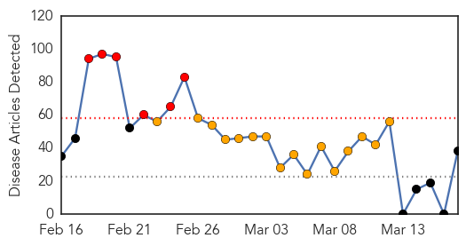

Swine Flu
30-Day Web Trend
6 alerts, 16 warnings

30-Day Twitter Trend
7 alerts, 0 warnings

Article Locations

Article Confidences

Top Articles:
- 1.000
- Turkey alarmed as swine flu kills 4 people in 5 days
- 1.000
- 100 swine flu deaths per month, but doctors say nothing to worry
- 0.999
- Is swine flu really scary or is market creating the panic to sell the remedy?
- 0.999
- Swine Flu: Is the threat over-hyped?
- 0.999
- 36 more swine flu deaths, CPI-M leader tests positive
- 0.999
- Swine-flu toll 1,587; cases reported 27,886: Nadda
- 0.999
- Doctors in Ahmedabad concerned over recovery time
- 0.999
- Swine-flu toll 1,587; cases reported 27,886: JP Nadda
- 0.998
- Number of victims of swine flu increases to 3 in Turkey
- 0.998
- Health ministry rules out swine flu epidemic
- 0.995
- JP Nadda: Swine-flu toll 1,587; cases reported 27,886
- 0.994
- Swine Flu: Death Toll in Telangana Mounts to 73
- 0.994
- Vaccination single best defense against H1N1
- 0.994
- Network of 21 labs established to combat swine flu: JP Nadda
- 0.991
- Turkey: Swine flu kills 11 in 2 years, epidemic ruled out
- 0.990
- Network of 21 labs established to combat swine flu: Govt
- 0.987
- Bengal swine flu toll 22, ex-minister tests positive
- 0.986
- Elderly man dies of H1N1 in Bethlehem, five others diagnosed with disease
- 0.986
- 4 new H1N1 cases in Assam
- 0.986
- State to bear hospital expenses of H1N1 patients on ventilator
- 0.981
- Bengal swine flu toll 22, ex-minister tests positive
- 0.979
- Bengal swine flu toll 22, ex-minister tests positive
- 0.973
- Swine flu claims 73 lives in Telangana since January
- 0.963
- Swine flu claims five more lives in Gujarat; toll 397
- 0.957
- Veteran CPI-M leader down with swine flu
- 0.952
- Veteran Communist Party Leader Gautam Deb Tests Positive for Swine Flu
- 0.950
- Veteran CPI-M leader down with swine flu
- 0.921
- Veteran CPI-M leader down with swine flu
- 0.906
- Child dies, swine flu suspected
- 0.898
- Another swine flu death in Bengal, toll 22
- 0.887
- Travel to India Protecting against the swine flu in India
- 0.886
- Young woman from Nablus dies of H1N1 in Israeli hospital
- 0.834
- Why are pvt hospitals turning away swine flu patients?
- 0.824
- H1N1 claims city’s 10th victim, dip in mercury worries docs
- 0.809
- Pune lab gets nod to conduct diagnosis tests
- 0.802
- Weather fillip for swine flu, child suspect
- 0.583
- Pune lab gets nod to conduct diagnosis tests
- 0.558
- State Plans Audit of Swine Flu Deaths
Top Tweets:
- 0.672
- India Swine Flu 2015: 1,731 Dead Out Of 30,000 Documented Cases http://t.co/lbbxisHWus
Influenza
30-Day Web Trend
0 alerts, 0 warnings

30-Day Twitter Trend
3 alerts, 0 warnings

Article Locations

Article Confidences

Top Articles:
- 0.994
- Flu cases rise across region as they fall statewide: News
- 0.991
- No bird flu scare in UP, says government
- 0.988
- Free flu vaccines for Indigenous children as experts warn of dangerous flu season ahead
- 0.946
- 'Bad strain' of flu from northern hemisphere could be coming to Australia
- 0.938
- Flu vaccinations delayed
- 0.926
- No bird flu scare in UP, says government
- 0.922
- N600m compensation coming for farmers affected by avian influenza
- 0.882
- Bird flu: Dudhwa National Park on high alert
- 0.880
- Bird flu: Dudhwa National Park on high alert
- 0.832
- Bird flu: FG earmarks N600m compensation to farmers
- 0.757
- Free flu vaccines for Indigenous children
- 0.751
- March 17, 2015 Archives
- 0.751
- March 17, 2015 Archives
- 0.751
- March 16, 2015 Archives
Top Tweets:
-
No tweets found for Mar 17, 2015